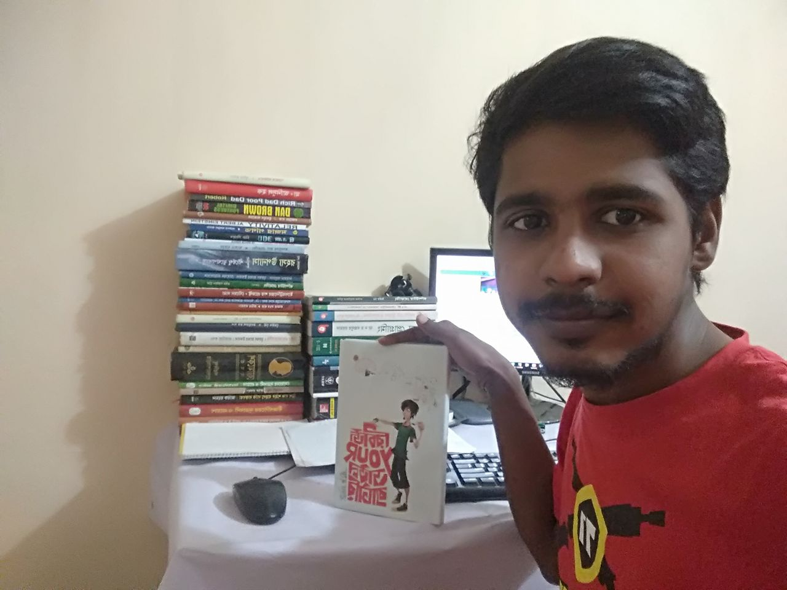

বুক রিভিউঃ "রিচার্জ ইউর ডাউন ব্যাটারি"
লেখকঃ ঝংকার মাহবুব
প্রকাশকঃ আদর্শ
মূল্যঃ ২০০ টাকা
==================================
ছোটবেলা থেকেই ছাত্র হিসেবে আমি "ভালো"ই ছিলাম(!)। একাডেমিক রেজাল্টের সাথে সাথে বিভিন্ন এক্সট্রাকারিকুলাম
অ্যাকটিভিটিজে যুক্তও ছিলাম। গণিত অলিম্পিয়াড থেকে শুরু করে বিভিন্ন কম্পিটিশনে বিজয়ী হয়েছি একাধিকবার। কিন্তু
ক্লাস নাইন-টেনে আলসেমি আার ফাঁকিবাজিতে আমার অবস্থা দিনদিন করুণ হতে থাকল। টানা কয়েকটি এক্সামে রেজাল্ট
খারাপ হওয়ায় আমার কনফিডেন্স কমে গেল। পড়াশোনা করতে পারলাম না। আমি যেহেতু ভালো স্টুডেন্ট ছিলাম তাই সবার
প্রত্যাশা ছিল এক্সামে আমি ভালো করব। সেই প্রত্যাশায় জল ঠেলে এসএসসিতে আমি পেলাম জিপিএ ৪.৯৫(যদিও বোর্ড চ্যালেঞ্জ
করে জিপিএ ৫ পাইছি কিন্তু সোনা প্লাস না পাইলে তো কোনো ভ্যালু নাই)। এই রেজাল্টে আমার দুনিয়া পুরাটাই চেইঞ্জ
হয়ে গেল। সবায় আমাকে ইগনোর করতো(সবায় না, কেউ কেউ আমাকে অনেক সাপোর্ট দিছে, তাঁদেরকে ধন্যবাদ),পাশ কাটিয়ে
চলে যেত। সেইসব দিন আমি অতি কষ্টে কাটিয়েছি।
.
যাহোক, এই অবস্থা থেকে বের হওয়ার জন্যে সর্বাত্মক চেষ্টা করেছি। অনেক ভাইয়া কাছে গেছি, অনেক বই পড়েছি এবং
অনেক ভিডিও দেখেছি। গতবছর ম্যাথ অলিম্পিয়াডে ঝংকার মাহবুব ভাইয়ার "হাবলুদের জন্যে প্রোগ্রামিং" বইটা কিনি।
আমার বই পড়ার জার্নিতে আমি ডিপলি অবজার্ভ করেছি যাদের লেখা আমার মনে ছুয়েছে সেইসব রাইটারদের সাথে একধরনের
আত্নিক সম্পর্ক গড়ে উঠেছে। ঝংকার ভাইয়ার সাথে আমার এধরনের একটা সম্পর্ক আছে। শুধু বইটিতেই নয় তিনি মাঝেমাঝেই
ফেইসবুক লাইভ আসেন। বিভিন্ন পরামর্শ দেন, টিপস দেন। আমি এগুলো ফলো করার চেষ্টা করি।
.
আমার গুরু হলো মাহমুদুল হাসান সোহাগ ভাই, মুনির হাসান স্যার এবং সর্বশেষ যুক্ত হলো ঝংকার মাহবুব ভাই। আমি
প্রতিনিয়ত চেষ্টা করেছি আমার অবস্থা চেইঞ্জ করতে। গতকিছুদিন আগে জানতে পারি বইমেলায় ঝংকার ভাইয়ার নতুন বই
আসছে। তিনি বইটির কয়েকটা অধ্যায় পোস্ট করেছেন বাট আমি একটাও পড়িনি। বই কিনেই পড়ব-এটাই পণ করেছিলাম। কারণ
আমি বিলিভ করি মানুষ ফ্রি জিনিষের দাম খুব কম দেয়।
.
যাহোক, এইবার আসল বিষয় কথা বলা যাক। ধান ভানতে শিবের অনেক গীত গেয়েছি। রকমারি থেকে গতকাল বইটা পেয়েছি। বইটির
ভূমিকা লিখেছেন মুনির স্যার। বইটি পড়ে রীতিমতো অবাক হয়েছি। আমার কাছে মনে হয়েছে ঝংকার ভাইয়া মাসুম ভাইয়ার
সাহায্যে আমার সাথে কথা বলছেন, পরামর্শ দিচ্ছেন এবং ভূলত্রুটিগুলো তুলে ধরছেন! বইটির কিছুকিছু বিষয় আমার
কাভে খুব ভালো লেগেছে। বইয়ের নাম থেকে শুরু করে প্রচ্ছদ, নানা ছবি, লেখার গদ্যশৈলী, প্রাসঙ্গিক উক্তি ও সবশেষে
লেখক পরিচিতি বইটিকে অনন্য করে তুলেছে।
.
সবচেয়ে ভালো লেগেছে লেখার ধরন। প্রচলিত ধারার বাইরে গিয়ে ভাইয়া যেরকম করে লিখেব্ছে তা বইটিকে জীবন্ত করে
তুলেছে। বইটি পড়ার সময় হুমায়ূন আহমেদ স্যারের কথা মনে পড়ে যায়। তাঁর বই পড়ার সময় যেমন একপেইজ পড়ার পর নেক্সট
পেইজ পড়তে ইচ্ছে এই বইটি পড়ার সময়ও এরকম মনে হয়েছে! এক ভার্সিটি পড়ুয়া স্টুডেন্ট আবির ও তার বড় ভাই মাসুম
ভাইকে দিয়ে বইটা শুরু হয়েছে।
.
আমি এই বইটিকে অন্যরকম বলব কেননা গল্পের আকারে লেখা হয়েছে। একজন বড় ভাই তাঁর ছোট ভাইকে বিভিন্নভাবে পরামর্শ
দিচ্ছেন, সেটা শুনে তার কী প্রবলেম হচ্ছে আবার সেটা কিভাবে সল্ভ করা যায় - এরকম ভাবে বইটি এগিয়েছে। আমার
কাছে মনে হয়েছে আমার মতো যাদের কোনোকারণে ব্যাটারি ডাউন বা লো হয়ে গেছে তাদের আাবির উত্তম মডেল হতে পারে।
ঝংকার ভাইয়া তাঁর আগের বইয়ের মতো কয়েক অধ্যায় পর পর প্রশ্ন করেছেন , অ্যানসার দেওয়ার জন্যে জায়গাও রাখা হয়েছে।
.
আরেকটি বিষয় আমার কাছে ভালো লেগেছে সেটা হলো সঠিক জায়গায় সঠিক ব্যক্তিদের উক্তি ব্যবহার। সর্বপ্রথম উক্তিটি
আমার কাছে খুব উপযুক্ত মনে হয়েছে।
.
বইটির শেষে একটা চমত্কার জিনিস আছে। নিজের অবস্থানটা কোথায় সেটা মাপার জন্যে বিশেষ বিশেষ প্রশ্ন করা হয়েছে।
যার মাধ্যমে নিজের ব্যাটারির কতটুকু চার্জ আছে সেটাও মাপা যাবে। এখানেই শেষ না, ব্যাটারি ডাউন হলে কিভাবে
রিচার্জ করতে হবে সেটাও আছে। পড়লেই বইটির কেরামতি বোঝা যাবে!
.
বইটি প্রকাশ করেছে আদর্শ। এই প্রকাশনীকে আমি অনেক পছন্দ করি। কেননা এই প্রকাশনীর বইও ভালো, দামও খুব কম।
.
সবশেষে বলা যায় জীবনে পথ চলার সময় হোঁচটও খেতে হয়। হোঁচট খেলেই তার পরাজয় হয় না, তার জীবন থেমে থাকে না।
চৈনিক প্রবাদেই তো আছে, "পতন কখনো পরাজয় নয়, পরাজয় তখন যখন কেউ উঠে দাড়াতে চায় না"। আমাদের সবারই কোনো না
কোনো কারনে ব্যাটারি ডাউন হতে পারে। তাই বলে বসে থাকব? নিজেকে চেইঞ্জ করতে হবে, সামনে এগিয়ে যেতে হবে। যেরকম
আমি একটু একটু করে এগোচ্ছি, আলহামদুলিল্লাহ। আমার মনে হয় সকল স্টুডেন্টদের বইটি পড়া উচিত। আমার মতোদেরতো
মাস্ট। ব্রিলিয়ান্টরাও পড়তে পারে। কারণ তাদেরও ব্যাটারি ডাউন হতে পারে। মুনির স্যারের মতো শেষ করছি, "সবার
জীবনের সেকেন্ড ডিফারেনশিয়াল নেগেটিভ হোক"।
.
মুহাম্মদ মেহেদি হাসান নাইম
বগুড়া, ২২:০০ বিএসটি
